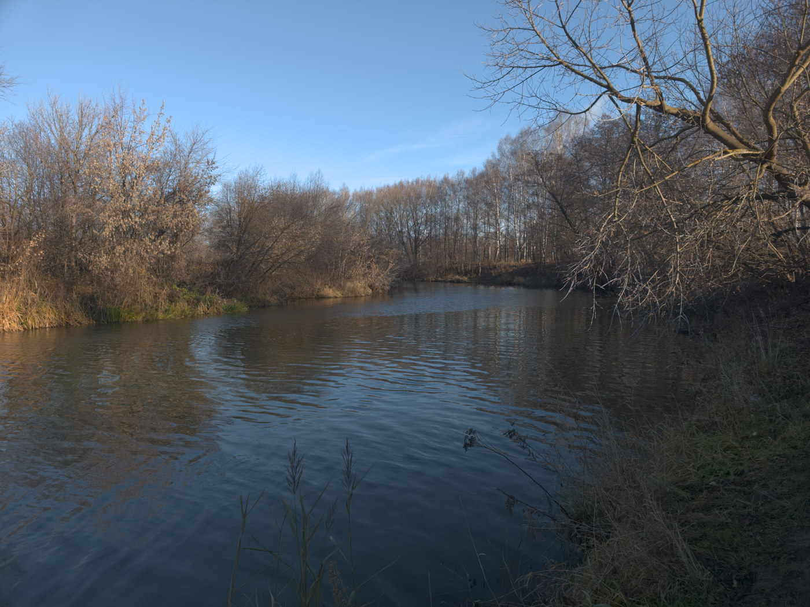
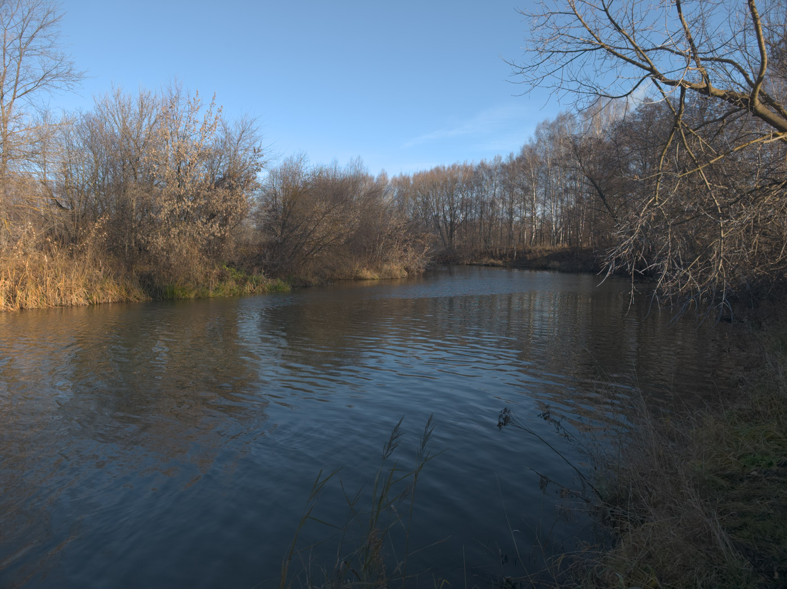

LightCraft Manual Editing Skill
Uma skill que ensina um agente de IA a editar fotos no LightCraft 0.21.1 inteiramente à mão: valores explícitos dos controles, geometria real de máscaras e gestos reais do ponteiro. Nada de Auto, nada de mágica.
O que é
LightCraft é um revelador RAW de código aberto e não destrutivo (alternativa ao Lightroom) com servidor MCP integrado. Este repositório é uma skill pronta para OpenCode / Claude Code / Codex:
~/.config/opencode/skills/lightcraft/
├── SKILL.md # doutrina, fluxo de trabalho, rotas de ferramentas, armadilhas
├── references/ # 12 manuais sob demanda
└── scripts/ # iniciador MCP, iniciador do app, atualização, inventário de complementos
Cobre os 392 comandos, os 114 controles de revelação, o esquema completo de develop, todas as famílias de máscaras, remoção de pontos, Point Color, HDR, fusão de exposições, exportação e os 41 presets internos com suas receitas numéricas reais.
Instalação
git clone https://github.com/ildargiv/lightcraft-manual-skill.git \
~/.config/opencode/skills/lightcraft
Reinicie o agente para que ele reescaneie as skills. Requisitos: LightCraft 0.21.1+ e Python 3 (apenas para os scripts auxiliares).
Conexão com o aplicativo em execução (recomendado)
O servidor MCP é registrado no opencode.json por um wrapper que se autorepara:
"lightcraft": {
"type": "local",
"command": ["python", "<skills>/lightcraft/scripts/mcp-connect.py"],
"enabled": true
}
O mcp-connect.py inicia o aplicativo desktop com --control 7980 se necessário e depois entrega o stdio ao lightcraft-cli mcp --compact --connect 127.0.0.1:7980. O agente recebe todas as ferramentas de edição mais as ferramentas de interface ao vivo: screenshot, click, press_key, pointer_gesture, set_ui, clipboard.
Equivalente manual:
powershell -ExecutionPolicy Bypass -File <skills>/lightcraft/scripts/start-lightcraft-app.ps1
Nossas vantagens
- Editar à mão é regra, não desejo. Proíbe explicitamente
develop.auto,develop.autoBwMix, Auto WB,crop.autoStraighten,geometry.upright auto,spot.findDust/findBlemishes,lensBlur.findSubject,preset.apply,develop.sync/autoSyncedevelop.matchExposure. Cada proibição vem com a substituição manual — números e coordenadas explícitos. - Cobertura total do aplicativo. 392 comandos com parâmetros, 114 controles com faixas/passos/padrões, esquema completo de
develop, os 10 tipos de máscara, pincéis, componentes, pontos, olhos vermelhos, Point Color, Lens Blur, curvas, HSL, correção de cor, óptica, geometria, impressão, slideshow e arquivo. - Todos os presets decompostos em números. Para cada um dos 41 presets internos, o conteúdo real é exportado: quais campos ele define e com quais valores. O agente pode reproduzir o look à mão e adaptá-lo à foto em vez de apertar um botão. Inclui ainda 3 presets de curva de pontos e 8 de exportação.
- HDR de ponta a ponta.
develop.hdr+maxEv+hdr.sdr*, fusão de exposições (merge.hdr,hdrBatch, panorama), exportação JPEG com gain map (ISO 21496-1), AVIF PQ/HLG de 10 bits, PNG/JXL Rec.2020 PQ de 16 bits e TIFF float de 32 bits. Verificado com ffprobe:rgb48be,smpte2084,bt2020. As prévias são sempre SDR — o agente não “corrige” com exposição um HDR que não vê. - Interface ao vivo e gestos reais. O modo connect fornece
screenshot,click,pointer_gestureepress_key. O agente vê o resultado na janela do LightCraft e pode desenhar pinceladas ou gradientes com um gesto real em coordenadas de imagem normalizadas, não apenas por comandos. - MCP autorrecuperável. O wrapper inicia o app com a porta de controle e elimina o conflito de
catalog.lock(um servidor headless e o app desktop não podem abrir a mesma biblioteca ao mesmo tempo). - Documentação que se atualiza sozinha.
scripts/refresh-reference.pyregenera os catálogos de comandos/controles e todas as receitas de presets a partir da versão instalada e a compara com o último release do GitHub. - Conhecimento de complementos e importação segura. Formatos suportados (
.lcpreset, XMP,.lrtemplate,.cube,.dcp,.lceffect,.lccurve, SAM 3, denoise ONNX), fluxo de importação comdryRun, revisão crítica de projetos de terceiros e aviso sobre pacotes piratas. - Validado em RAW reais. Os exemplos abaixo são DNGs Xiaomi 13 Ultra revelados à mão; cada um traz o JSON
developexato para reproduzi-los. - Proteções. Experimentos apenas em
photo.virtualCopy, exportações de teste em temp, recusa em sobrescrever originais/XMP, metadados tratados como dados não confiáveis,history.list/restoreeedit.undoem cada etapa.
Conteúdo
| Arquivo | Conteúdo |
|---|---|
SKILL.md | Doutrina manual, pipeline de edição, ferramentas, UI, armadilhas |
references/controls.md | Todos os controles: id, min, max, padrão, passo |
references/develop-json.md | Esquema completo de develop com significado dos campos |
references/masks-spots.md | Formas de máscara, pincéis, componentes, pontos, olhos vermelhos, Point Color, Lens Blur |
references/hdr.md | Edição HDR, rendição SDR, fusão, exportação, verificação |
references/presets.md | 41 presets com valores exatos, curvas, presets de exportação |
references/manual-editing.md | 12 receitas por gênero com números concretos |
references/export.md | Formatos, tamanhos, metadados, marca d'água, folha de contato |
references/commands-edit.md | Comandos de edição com todos os parâmetros |
references/commands-rest.md | Biblioteca, metadados, impressão, slideshow, rostos |
references/library.md | Mapa de recursos que não são de edição |
references/addons.md | Complementos, modelos e projetos da comunidade |
scripts/* | Iniciador MCP, iniciador do app, atualização, inventário |
Exemplos
Três DNGs Xiaomi 13 Ultra da mesma sessão (rio perto do porto), revelados à mão. Cada JPEG foi gerado com lightcraft-cli render a partir do original.dng correspondente e do JSON de ajustes exato — sem develop.auto, sem preset.apply, sem alinhamento automático nem detecção de sujeito.
01 — Rio HDR, gradiente de céu e máscara local de árvores


- original.dng · ajustes manuais · JPEG com gain map HDR
- Headroom de 3,5 EV, rendição SDR ajustada separadamente, máscara
linearde céu +radialde árvores.

02 — Hora azul, WB manual e graduação dividida


- original.dng · ajustes manuais
- WB 4200 K / +6 tint definido à mão, sombras frias contra luzes quentes, NR 20/28.
03 — Hora dourada, máscara quente local


- original.dng · ajustes manuais
- Luzes −50, sombras +35, mixer laranja/amarelo, máscara radial suave na folhagem.
Todas as exportações usam metadata=none, 1400 px na maior borda e qualidade JPEG 88. O exemplo HDR contém ainda um gain map ISO 21496-1 (marcador hdrgm verificado).
Verifique você mesmo
python scripts/addon-inventory.py
python scripts/refresh-reference.py
lightcraft-cli render examples/01-river-hdr/original.dng -o repro.jpg \
--settings examples/settings/01-river-hdr.json --size 1400 \
--opt metadata=none --opt quality=88 --opt hdr=true
Limitações
- O LightCraft está em alpha (0.21.1) e ainda não tem API oficial de plugins — “complementos” são presets/perfis/modelos importados e utilitários externos.
- O SAM 3 não acompanha o programa (≈3,4 GB, licença Meta); máscaras Object/Describe precisam dele. Sky/Subject/Background funcionam sem ele.
- O LightCraft não consegue exibir HDR na tela: as prévias são sempre SDR. Avalie o HDR pelo gain map / arquivo PQ exportado.
- Os repositórios de terceiros em
addons.mdsão não oficiais e não verificados; examine o código e as licenças antes de usar.
Licença
MIT — veja LICENSE. O texto da skill e os scripts são trabalhos originais. O LightCraft é um projeto separado da equipe ArtCraft (MIT OR Apache-2.0). Os DNGs de exemplo continuam sendo propriedade de seu autor e foram incluídos apenas para demonstração.
Feito para um agente que sabe apertar botões, mas prefere trabalhar à mão.